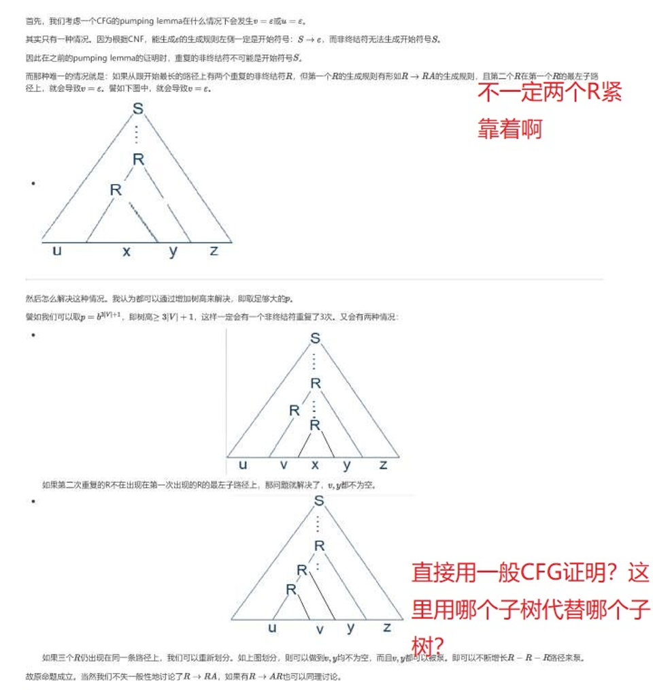

难道尘世的风会一下子就无情地刮散自己攀折的这朵败酱上的露水不成？
# 第一章
# 1.38
# 题目
# 原作答
# 修正
原本想直接说明，all-NFA 的表达能力夹在 DFA 和 NFA 之间的… 其实这是对的，但我想错了。
DFA 是一种 all-NFA，但 all-NFA 并不是一种 NFA，正如老师所说。所以对于任意一个 all-NFA，都需要构造一个 NFA 与其等价。然而这非常困难，所以选择类似于 DFA 转 NFA 中的子集采样法，构造一个 DFA 与 all-NFA 等价。
# 1.46-d
# 题目
# 原作答
# 修正
考虑对任意一个泵长度，都有一个长度大于等于 的字符串，它无法被泵。
其实挺显然，因为如果想要泵，那么划分的 中必然只有 0。（否则就会导致有很多的 1 出现，而原语言只有三个 1）
然后只有 0 的话，显然也不行，因为会导致前后 0 的个数不同。
# 1.54
# 题目
# 原作答
# 修正
-
这一部分确实有个问题，就是命题 “若 是非正则语言，则 也是非正则语言” 是未被证明的。譬如当 时， 就仍是正则的。
所以我们直接证明 不是正则的。考虑使用泵引理，对任意的泵长度，构造字符串。则如果我们想把它划分为 而且 可以重复任意多次的话， 中不能有，也不能只有，而有 和 也不行，总之就是不存在这样的划分。
-
我脑子不好，犯了个最基础的逻辑错误可恶啊。要证明的是存在一个泵长度，使得长度大于等于 的字符串都能被泵。很显然我们泵的对象应该是，然后可以考虑特判一下泵导致只有一个 的情况。
好好反省，痛定思痛，痛何如哉。
# 1.55-g, h, i
# 题目
# 原作答
# 修正
-
(g) 中，当字符串长度大于等三，则前三个 symbol 中必然有一个 1，然后泵那个 1 就好了，要说清楚。
-
(h) 中，应该取 是剩余的字符串。这样的话泵 10 是对的，因为 可以想添加多少 都可以。注意，即循环节内内容可以有不同个 1。
-
(i) 中，有限语言的最短泵长度就是其中最长的字符串的长度加 1。因为我们需要让语言中每个字符串都不是可泵的，否则就会导致语言集合内有无数多字符串。
# 1.54 - 修正
当时不服气，还证明了个引理来着 hhh。
# 第二章
# 2.17
# 题目
# 原作答
# 修正
没太看懂老师是啥意思，但是我还是得严谨地重新写一遍。重点就是后面三条，如何把正则表达式的生成规则转化为上下文无关文法的生成规则。
# 2.21
# 题目
# 原作答

# 修正
这题我没做错，放在这是为了记录当时 scintillating の瞬間
# 2.18-a
# 原题目
# 原作答
# 修正
这题做错了。因为忽略了 PDA 可以读入 而 DFA 不能的问题。当读入，应该让状态二元组的 PDA 的状态往前转移，但 DFA 的不动。严谨地说：
苏博南啊苏博南，这个题都能少考虑的吗？
# 2.22
# 原题目
# 原作答
要我以前肯定不会就这么写了不会，心气都没了，也是当时事情比较多，错估计了题目难度。
反转了，知道补写就是好孩子（但是写错了
# 修正
考虑任意一个语言中的字符串，实际上都有如下特性：
其中， 和 的长度是相同的，而 和 是任意字符串了，没什么关系。
注意 和 不需要相同，因为我们的文法只要能生成字符串就好了，就算一个字符串有多种生成方式也是可以的。
意思就是 在井号的左右某位置出现了不同的字符。
那么我们可以着手考虑设计文法：
我们考虑下 是个什么东西。实际上，它就是形如， 和 的长度相同的字符串集合。 也类似。
因此我们可以写下生成文法：
文法生成符为。注意要特判井号一边为空串的情况。
# 2.12
# 题目
将 2.1 中的 CFG 改为 PDA。
# 原作答
当时对 CFG 转 PDA 的过程没有理解，就生硬地生搬硬套算法过程。
# 修正
可以注意到，每个生成规则都对应了 qloop 右边的一个环，每个终结符都对应了 qloop 的一个自环。
而且每个生成规则都是读，因为本质上是在做 nondeterministic 的尝试，而每个终结符就需要栈顶就是这个终结符，然后才能弹出匹配。
# 2.36
# 题目
# 原作答
# 修正
这题有更简单的做法，仍考虑语言
它是非上下文无关的。（这个原作答证明正确）
存在一个泵长度（随便取的），然后考虑字符串。
-
若，那么直接划分：
显然，想怎么泵 都可以，无论重复多少次都行。
-
若，那么直接划分：
就是把第一个字符当作被泵的对象。然后剩下的字符串都丢到最后。
显然这样是可泵的。
# 2.37
# 题目
# 原作答

# 修正
这个 strong pumping lemma 在 YouTube 上有人做视频介绍了，但我看了没太看明白。考虑自己来证明。
我们考虑什么时候会出现 或 为空，不失一般性，就考虑 为空的情况：
即在我们对 pumping lemma 的证明过程中，第二次出现的 在第一次出现的 的最左替换路径上，即有生成规则：
此时就会导致，子树 中，一直沿着最左孩子走下去，会碰到另一个，这样 就是空的。
为了解决这个问题，我们当然要提升树高，使得 出现三次。为了保证，我们可以取（有点随意取的），此时，在底层的 子树中，就会出现三次。
此时有两种情况：
-
第三次出现的 仍在最左替换路径上：
此时，我重新如图划分了，然后可以通过子树替换：
那么这样替换，就可以泵出新的 和。
-
第三次出现的 不在最左替换路径上了
这是我们希望的平凡的情况，可以类似原 pumping lemma 进行子树替换得证。
# 第三章
# 3.14
# 题目
# 原作答
# 修正
没有修正，我觉得我写的挺对的，老师可能表示没时间看。
# 3.15-e
# 题目
# 原作答
# 修正
好，我来细致一点。
首先，把输入从第一根带子上拷贝到第二根带子上。
考虑 是判定第一个语言的 TM， 是识别第二个语言的 TM。
那么我们可以构造一个双带图灵机，状态集就是。
然后若状态，若 不是 的接收状态，则第二根带子读写头保持不动，而且现在只专心运行第一根带子上的。
一旦第一根带子拒绝，就整体拒绝。否则第一根带子进入接收状态，此时第一根袋子读写头再也不动，专心在第二根带子上运行.
好我说完了.
# 3.22
# 题目
# 原作答
# 修正
可以，用谜语打败谜语。看了 solutions + 认为 solution 在胡言乱语 + 我再胡言乱语扯一些没用的.
附上书上的 solution, 令人迷惑.
# 第四章
# 4.10
# 题目
# 原作答
# 4.10 修正
= “On input , where is a PDA.
-
首先，我们可以通过算法得到 识别的语言的 CFG，然后得到该文法的变量数 和泵引理中的。（即最大替换规则右侧字符串长度）
-
我们构造一个 DFA，它接受的串是所有长度大于等于 的字符串。这很简单，即一共有 个状态，无论读入什么字符都往后一个状态，如下图
-
然后我们构造一个 CFG，它生成的语言是 和上述 DFA 的交。
-
调用 判断上述 CFG 生成的语言是否为空。若是，则接受，否则则拒绝。”
说明：根据泵引理，如果该 CFG 能生成长度大于等于 的串，就说明一定是可以泵的，即可以生成无穷多的字符串。而且 PDA 和 DFA 是可以交的（正则语言和上下文无关语言的交还是上下文无关的），故上述图灵机可判定.
# 第五章
# 5.14
# 题目
# 原作答
# 修正
首先，我对语言的 formalization 确实出问题了。
题意确实是：
是图灵机的编码， 是一个字符串，且 在计算 的过程中，发生了读写头在最左端仍然尝试左移的行为。
仍然反设存在 的一个判定器，然后去构造 的构造器。
= "On input
- 把带子内容全部右移一格，并在左侧带头写上 $ 特殊符号。
- 把读写头移到 $ 右侧一格。
- 运行，给 添加一个状态，即读到 $ 后直接右移读写头。
- 若 进入接收状态，则把读写头移动到 $ 并左移一次。"
然后直接用 去判定，我们就得到了 的一个判定器。